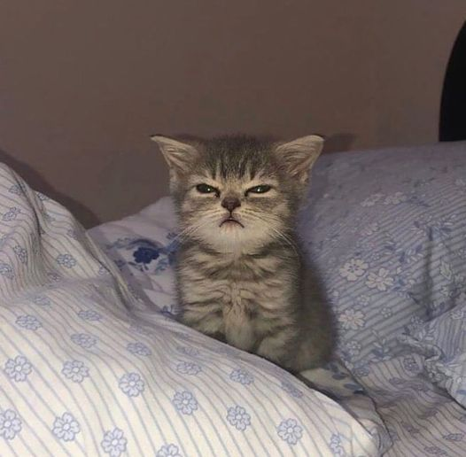

Hubby tumi bose tako, valobasha nao ehkon
সে যে বসে আছে একা একা রঙিন স্বপ্ন তার বুনতে সে যে চেয়ে আছে ভরা চোখে জানালার ফাঁকে মেঘ ধরতে সে যে বসে আছে একা একা রঙিন স্বপ্ন তার বুনতে সে যে চেয়ে আছে ভরা চোখে জানালার ফাঁকে মেঘ ধরতে তার গুনগুন মনের গান বাতাসে উড়ে কান পাতো মনে পাবে শুনতে তার রঙের তুলির নাচে মেঘেরা ছোটে চোখ মেল যদি পারো বুঝতে তার গুনগুন মনের গান বাতাসে উড়ে কান পাতো মনে পাবে শুনতে তার রঙের তুলির নাচে মেঘেরা ছোটে চোখ মেল যদি পারো বুঝতে সে যে বসে আছে একা একা তার স্বপ্নের কারখানা চলছে আর বুড়ো বুড়ো মেঘেদের দল বৃষ্টি নামার তাল গুনছে সে যে বসে আছে একা একা তার স্বপ্নের কারখানা চলছে আর বুড়ো বুড়ো মেঘেদের দল বৃষ্টি নামার তাল গুনছে সেই গুন গুন মনের গান বৃষ্টি…
Powder Lipstick Eyelines
HairStrighting Comb Styling
Sharee Churi Juta
shundor gach pala dakhlam
bagh mama daklam
Khali pani ar pani
pani_puri, rosmalai, Alu ki puri with curry